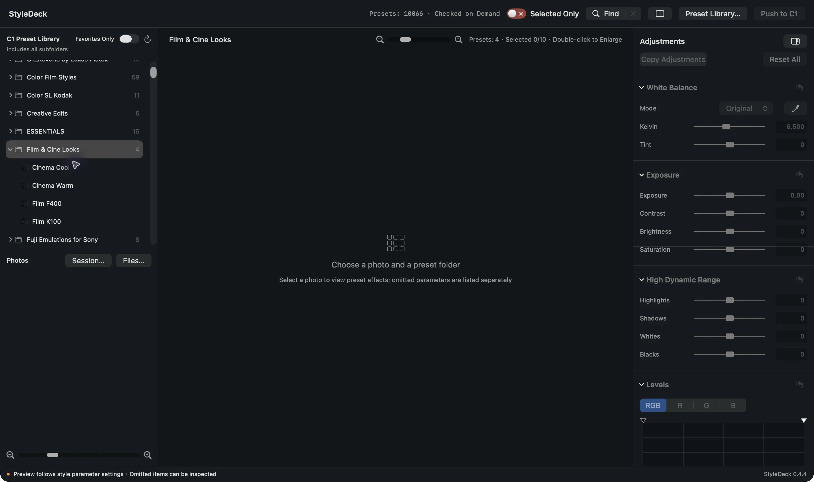
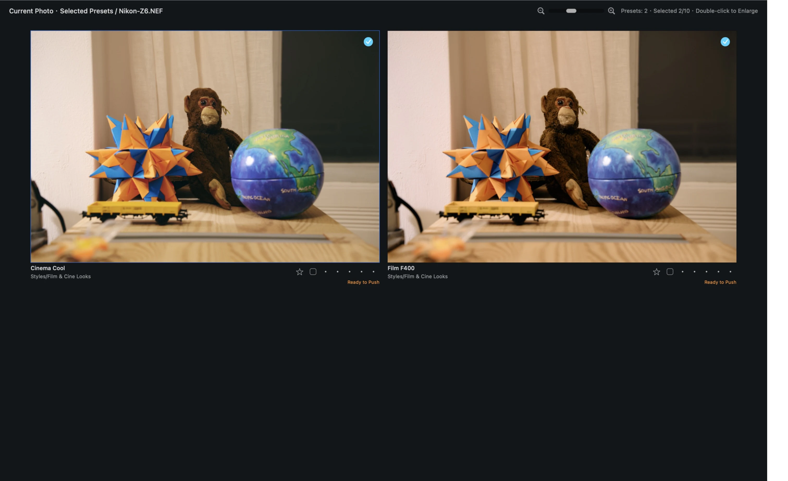

StyleDeck 0.4.8 · build 37
Install and get started
Current version: 0.4.8 / build 37 for Apple Silicon (arm64). Declared minimum: macOS 14. Physical macOS 14/15 testing and clean-Mac offline first launch remain pending.
- Install: Download the official DMG, drag StyleDeck to Applications, then launch from Applications. Version and download status ↗
- Prepare: Install a properly licensed copy of Capture One and styles you have permission to use.
- Permissions: Allow StyleDeck to control Capture One on first send. If denied earlier, review System Settings → Privacy & Security → Automation. Grant file access when requested by macOS.
- Language and library: View → Language switches Simplified Chinese, Traditional Chinese and English immediately. A manually selected preset directory is remembered at the next launch; choose it again if moved.
License: Available at no charge under PolyForm Strict 1.0.0. The noncommercial purposes, personal uses and organization categories expressly listed in that license are permitted. Commercial use, modification and redistribution are not licensed. License and third-party notices ↗
The guide text has been checked against 0.4.8 while retaining older genuine screenshots. Completed send status confirms execution, saving and required identity, style and marking checks, not equality of every adjustment value or output pixel. Back up important work and test using copies.
Capture One
user style preview tool.
A companion for comparing and adjusting Capture One styles
Compare your installed styles side by side, select and refine candidates, then send them back to Capture One.
Try the walkthrough ↓The same RAW, with three actual StyleDeck previews. Click an image to enlarge.
About the screenshots: The examples show StyleDeck’s Chinese interface. English instructions include the Chinese labels for key controls. The website language switch does not change the app’s language.
How StyleDeck fits into Capture One
StyleDeck is a standalone companion for Capture One. Compare installed user styles on the same RAW file, shortlist and adjust candidates, then push the current photo’s selected candidates and adjustments to a target C1 session for further editing and output. In this guide, “preset” refers to a Capture One user style (.costyle).
The workspace
Choose styles and photos on the left, compare previews in the center, and adjust the current look on the right. The toolbar provides search, filtering, library selection and push controls.
What you can do
Compare multiple C1 styles side by side; select, favorite, rate and color-tag candidates; inspect an enlarged view; fine-tune white balance, exposure and curves; save a project; export JPEG or PNG; or push selected candidates back to C1.
02 · WALKTHROUGH
Your first style comparison
Open a session with four public RAW samples, compare styles for one photo, save the project, and push the candidates back to Capture One.
Prepare the sample session
Create a dedicated Capture One session and put four public RAW files in its Capture folder: Nikon Z6, Canon 5D IV, Sony a7 III and Fujifilm X-T4. This walkthrough compares Nikon Z6 sample 3581 by Ludger Heide. Watch the wall, orange and blue origami, and shadow details in the toy. The example uses installed Film & Cine Looks styles: Cinema Cool, Cinema Warm, Film F400 and Film K100. You can use your own styles; this guide does not distribute them.
Nikon-Z6.NEF ↗ · Canon-5D-IV.CR2 ↗ · Sony-a7III.ARW ↗ · Fujifilm-XT4.RAF ↗
Open a Capture One session
In StyleDeck, click Session… (会话…) in the lower-left Photos area. Select the session’s .cosessiondb file and click Open. Alternatively choose File → Open C1 Session… or press ⇧⌘O. The app creates an unnamed StyleDeck project, saved separately from the C1 session. Four thumbnails appear: click a thumbnail to compare that photo. Select Nikon-Z6.NEF for this walkthrough. Multiple variants are still one source file. You may instead use File… (文件…) or ⇧⌘I to add RAW files, then set a target C1 session later.
REAL SCREENSHOTS · POINTER PATH
Opening the session
Step through the real screenshots or play the demonstration.

A webpage animation over screenshots; it does not control your software.
Choose a style directory
Select Film & Cine Looks in the upper-left directory. The grid shows four presets and a RAW base reference. Expand the triangle beside the directory to see individual names. If the styles are missing, click Preset Library… (预设库…) and select a folder containing .costyle files; use the refresh button after adding presets. The demonstration library is a local example.
Compare styles
Compare the same areas: the wall’s warmth, origami color saturation, then shadow detail in the toy. Use the top-right slider to change preview size and the side-panel button to make more room. If a card says items were omitted (已省略), click the notice to inspect which parameters were not included before judging the preview.
Select and filter candidates
Click the circles in the top-right corners of Cinema Cool and Film F400. Blue checkmarks mean both are candidates for the current photo; click again to deselect. The highlighted border identifies the current effect and is separate from selection. The star beside a name is a favorite shared across photos, not a candidate selection. Turn on Show Selected Only (仅显示已选) to compare the two candidates. Increase preview size with the top-right slider to bring them closer together; too large a size may produce a single column.
REAL SCREENSHOTS · POINTER PATH
Selecting candidates
Step through the real screenshots or play the demonstration.
A webpage animation over screenshots; it does not control your software.
Inspect an enlarged preview
Double-click a candidate. Use the top arrows or ← / → to switch within the current grid; scroll to zoom and drag with the left mouse button to pan. The right panel adjusts the current look. Press F for full screen and Esc to close. The preview uses the configured preview size; for original-size detail select Original Size in StyleDeck → Settings → Preview and wait for rendering.
Save the comparison
Press Esc to return to the main window, then ⌘S or File → Save. Name the project and save it. The success message confirms the project was saved. A .styledeck project stores references, selections and adjustments; it does not copy RAW files. Keep the original files or relink them if moved. Saving a project is separate from exporting JPEG or PNG.
Push candidates to Capture One
Push operates on selected candidates for the current photo, not every photo in the session. Select each photo and push it separately. A favorite star does not replace the candidate checkmark.
Path A: push back to the opened session
When you open a C1 session using Session… (会话…), that session is the new project’s default push target. Select the current photo and candidates, make any adjustments, then left-click Push to C1 (推送到 C1). If you previously changed the target, right-click that button and choose Set C1 Target Session… to check it; select the original .cosessiondb to return to the source session. Changing the foreground Capture One window does not change StyleDeck’s target.
Path B: specify a target session
Right-click Push to C1 (推送到 C1) and select Set C1 Target Session… (设置 C1 目标会话…). You can also use File → Set C1 Target Session…. Left-clicking the button pushes; right-clicking opens the target menu. Setting a target changes the destination, not the photo list. To browse another session’s photos, open it using Session….
Choose an existing target
Choose Existing Session (现有会话), click Select… (选择…) on that row, select the target .cosessiondb file and click Open. Check the selected session and decide whether to copy newly added photos into the session directory. Do not select a RAW file or an ordinary photo folder.
Set up a new session
Choose New Session (新建会话), enter a unique session name, then use Select… beside the save location to choose an existing parent folder. The app creates a folder named for the session. Choose whether to reference the originals or copy newly added photos. The actual session creation and push happen when you execute the push.
Original references or copies?
With Copy newly added images to the session directory unchecked (the default), C1 references the original photos and stores adjustments and cache alongside them. When checked, C1 imports copies of new photos while retaining the originals. This does not copy the entire source session. In the target settings dialog, OK records the settings; then left-click Push to C1 to execute. Cancel discards the changes. If a push was initiated before a target existed, confirming the target continues that push. Save the StyleDeck project afterwards.
Check the result in Capture One
Wait for the completion summary and check the number of unfinished items. The example shows two new, zero updated, zero skipped and zero unfinished. Both cards display Pushed (已推送). Open the actual target session in Capture One, find the photo and its new variants, inspect the result and continue editing. Existing Nikon variants 1–3 were already in this example; this push added 4 and 5, but actual numbering depends on the target session. If a target is unavailable or a push fails, read the specific error, check the paths and retry.
Full screen and hidden panels
In the main window press F or choose View → Enter Full Screen. The toolbar and side panels hide. Move the pointer to the extreme left edge to reveal styles and photos; move to the right edge to reveal adjustments. A panel stays open while the pointer is inside and hides when it returns to the center. Move to the top edge for the menu bar. Press F or Esc to leave main-window full screen. In the normal main window, the top-right sidebar button or View menu restores the right panel; drag the divider to resize the left side. In the enlarged window F toggles its own full screen, and the sidebar icon or View menu restores its adjustment panel; there is no left photo panel there. Esc closes the enlarged preview after any active sampling is cancelled. Hold Space for the app’s original reference and release to return to the effect. The embedded RAW reference can differ from the RAW base rendering and is not a Capture One before/after comparison.
REAL SCREENSHOTS · POINTER PATH
Revealing full-screen panels
Step through the real screenshots or play the demonstration.

A webpage animation over screenshots; it does not control your software.
Mouse controls
Double-click an image to enlarge; scroll to zoom; drag to pan. Fit shows the whole image and Fill fills the image area. The circle selects a candidate, the star marks a favorite, and color and rating controls are separate. The top grid slider and lower photo slider control their respective thumbnail sizes. Search, selection and favorite filters, preset library, push, folder import, target settings, Show in Finder and copy/paste/reset adjustments use buttons or menus and have no separate default shortcut.
KEYBOARD & MOUSE
All shortcuts
| Keys | Action | Context / menu |
|---|---|---|
| ⌘O | Open StyleDeck project | File → Open StyleDeck Project… |
| ⇧⌘O | Open Capture One session | File → Open C1 Session… |
| ⇧⌘I | Import one or more files | File → Import Files… |
| ⌘S | Save current project | File → Save |
| ⇧⌘S | Save project as | File → Save As… |
| ⇧⌘E | Open photo export | File → Export Photos… |
| ⌘W | Close current project | File → Close Current Project |
| ⌘Z | Undo adjustment | Edit → Undo Adjustment |
| ⇧⌘Z | Redo adjustment | Edit → Redo Adjustment |
| ⌘, | Open settings | StyleDeck → Settings |
| ⌘Q | Quit StyleDeck | Save the project first |
| F | Toggle full screen | Main or enlarged window; leave text fields first |
| Esc | Exit main-window full screen | Returns to the normal main window |
| ← / → | Previous / next effect | Enlarged window; follows the current grid |
| Hold Space | Temporarily show original reference | Enlarged window; release to return to the effect |
| Esc | Close enlarged preview | Cancel active sampling first |
| 0–5 | Set rating | Only when the rating control has focus |
| ← / ↓; → / ↑ | Decrease / increase rating | Only when the rating control has focus; use numbers in enlarged view to avoid conflicting with candidate navigation |
| Delete / ⌦ | Clear rating | Only inside the rating control |
| Return | Apply search or start export | Export only when enabled; means Done in preview settings |
| Esc | Close search, photo info, export or style parameters | Sampling and other contexts may differ |
⌘ Command · ⇧ Shift · ⌦ forward delete. Shortcuts apply to the active window; unavailable menu items are dimmed. In text fields, ⌘A, ⌘C, ⌘X and ⌘V select, copy, cut and paste text; these are not photo adjustment shortcuts.
Does selecting a style change the original RAW?
Selections and manual adjustments are saved in the StyleDeck project. JPEG and PNG exports are separate files; the RAW remains the source. After a push, Capture One stores the corresponding variant adjustments.
Does a blue border mean a candidate is selected?
The highlighted border identifies the current effect. A checkmark in the upper-right circle indicates a candidate; the two are independent.
What if I cannot find these styles?
The example uses locally installed styles. Use any styles you own and verify that Preset Library points to a folder containing .costyle files. Preset files are not included.
What does the omitted-items notice mean?
Click it to see which parameters were omitted because of settings or photo type. Review those details before judging the preview; unsupported active parameters show a reason.
SOURCES & VERSION
About the sample material
Nikon Z6 RAW, archive #3581, photographed by Ludger Heide, downloaded from raw.pixls.us on October 28, 2026, SHA-256 checked. The archive is marked CC0; the RAW retains a CC BY-SA 4.0 attribution. The photograph and rendered examples are offered under CC BY-SA 4.0, including development, color and size changes. This license does not cover the software interface or preset files.
The session also contains public samples from Canon 5D IV (#983, Lothar Kimmeringer), Sony a7 III (#2414, author unspecified), and Fujifilm X-T4 (#3918, author unspecified), marked CC0 1.0 and SHA-256 checked. Screenshots use a dedicated StyleDeck 0.3.8 demonstration environment. Installed presets are shown but not distributed.